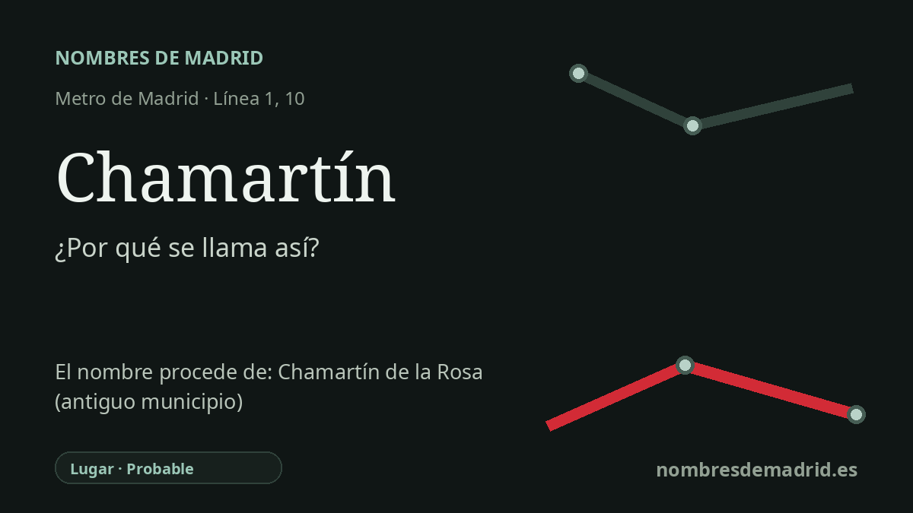

Publicado el · Investigación de Nombres de Madrid · Cómo verificamos cada origen · 9 fuentes consultadas
Respuesta rápida
La estación de Chamartín toma su nombre del distrito y antiguo municipio de Chamartín de la Rosa, anexionado a Madrid por decreto en 1947 e incorporado en 1948. El topónimo antiguo es probablemente un nombre de repoblación de origen antroponímico formado por Echa, nombre medieval relacionado con el vasco aita, y Martín.
La historia del nombre
La estación de Chamartín toma su nombre del lugar en el que se encuentra: el actual distrito de Chamartín y, antes de él, el municipio independiente de Chamartín de la Rosa. La parada de Metro está bajo el gran complejo ferroviario del norte de Madrid, por lo que su nombre funciona a la vez como nombre de distrito y como nombre de intercambiador.
Detrás del distrito hay una aldea antigua. La historia municipal del distrito habla del casco rural de Chamartín de la Rosa, y el Archivo de Villa identifica a Chamartín de la Rosa como un ayuntamiento con documentación conservada hasta la etapa de anexión. Una crónica municipal sitúa los orígenes del asentamiento en el contexto repoblador de la Comunidad de Villa y Tierra de Madrid, entre los siglos XI y XIII.
La explicación lingüística más sólida entiende Chamartín como un topónimo de repoblación formado a partir de nombres personales. La entrada de Emilio Nieto Ballester en el Toponomasticon para el Chamartín de Ávila explica la forma como Echa más Martín: Echa se interpreta como nombre personal medieval de origen vasco, relacionado con aita, y Martín es el conocido antropónimo de origen latino. Esa entrada no es una documentación medieval directa del Chamartín madrileño, pero menciona expresamente la localidad madrileña llamada en su día Chamartín de la Rosa entre los casos relacionados, por lo que la misma familia etimológica resulta plausible.
Chamartín de la Rosa cambió de escala de forma radical en los siglos XIX y XX. La información municipal señala que gran parte del distrito actual tuvo una urbanización tardía, salvo el antiguo casco rural y algunos barrios posteriores, y que el antiguo municipio incluía también zonas hoy asociadas a Tetuán. Fue anexionado a Madrid por decreto en 1947 e incorporado en 1948; desde entonces, el nombre abreviado Chamartín quedó como nombre del distrito y de la estación.
Por eso conviene explicar el nombre de la estación ante todo como un topónimo, no como una dedicación directa a una persona llamada Martín. La historia popular de unos clientes que pedían vino gritando 'Echa, Martín' es una etimología popular clásica y tiene menos fuerza que la explicación antroponímica. También conviene precisar el dato ferroviario: el gran edificio actual de la estación de tren se construyó entre 1970 y 1975 y pasó a llamarse Madrid-Chamartín-Clara Campoamor en 2020, mientras que la estación de Metro conserva el nombre breve Chamartín.